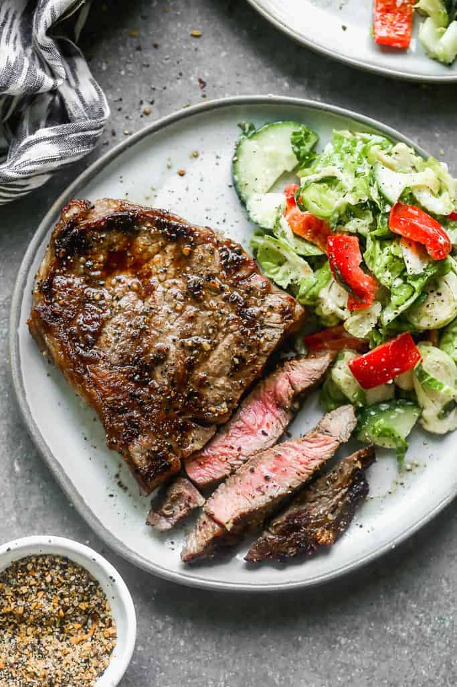

Grilled Rib Eye Steak

Description
I love the flavor and lack of kitchen cleanup that occurs whenever we fire up our favorite grill recipes, like Carne Asada Tacos, my favorite Grilled Chicken, or Grilled Pizzas!
I have several grill master influences in my life and there’s one thing I’ve come to learn from all of them: there’s a standard procedure to follow when firing up the grill, and if you follow it, you’ll have great results every single time!
Ingredients
- 2 Rib Eye Steaks, thin-cut (or uses your preferred steak)
- Steak Seasoning, to taste
- Salt and pepper, if needed
Steps
- Remove the steaks from the refrigerator 15-30 minutes before grilling to allow them to come to room temperature. Season steaks about 10-15 minutes before grilling and preheat your grill to medium-high heat (about 450-500 degrees F.)
- Place steaks on hot, well oiled grill. Cover with grill lid and cook for 3-4 minutes, (or more, depending on the thickness of the steak). Flip steaks, cover with lid, and cook an additional 3-4 minutes or until firm around the edges and slightly tender in the center. Use a thermometer to reach your desired doneness (for example, a few degrees shy of 130 degrees F for medium rare). Don't overcook!
- Transfer to a plate or cutting board, cover, and allow to rest for 5-10 minutes before cutting and serving.
- Store leftover steak in the refrigerator for up to 4 days.
Nutrition
- Calories: 940kcal
- Protein: 90g
- Fat: 63g
- Saturated Fat: 98g
- Cholesterol: 275mg
- Sodium: 235mg
- Potassium: 1211mg
- Vitamin A: 701IU
- Calcium: 32mg
- Iron: 7.8mg